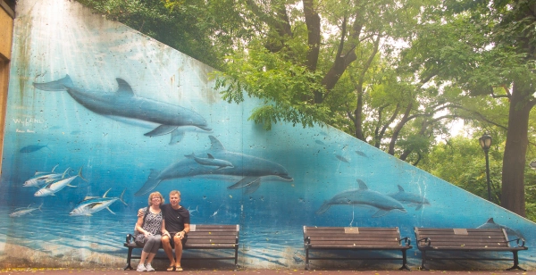

In Search of Wyland Walls

It rained quite hard on the way from Baltimore to Washington but by the time we got to the Zoo it had reduced to a drizzle. It was not great Zoo weather and, while not yet lunchtime, the animals has no interest in being out or active. As we usually have a good time at zoos we were a little disappointed but we did get to see “Dolphins-Small Tooth Whales” on the wall of the visitor center. As with most of the walls on this trip, it is showing its age but in better shape than some. As the smallest of the Wyland walls, it posed no challenge to getting a photo.
The National Zoological Park
3000 Connecticut Ave. N.W.
Washington, D.C.
30 Feet Long x 15 Feet High
Dedicated August 9th, 1993
Excerpt from @wylandfoundation on Instagram
While the mural at the Smithsonian’s National Zoo and Conservation Biology Institute in Washington, D.C., is the smallest Whaling Wall Wyland has painted, the artist considers it one of his most important. Painted on a wall right at the front entrance to the zoo, it is estimated that five million people walk by it every year! Because of its size, only 30 feet long by 15 feet high, Wyland decided to paint the smallest of whales – dolphins, which are actually small-tooth whales. “When I told Dr. Roger Payne, the world’s leading whale researcher, that I was going to paint dolphins at the zoo, he recommended I paint the harbor porpoise, the smallest of the dolphins,” Wyland says. I thought it was a great idea and painted one in his honor. He flew over from London to dedicate the mural, which was a great honor for me.”
Several political dignitaries attended the dedication ceremony as well, and the triangle-shaped mural drew accolades from the WWF and National Wildlife Federation, among others. While in Washington, Wyland also presented the Very Special Arts gallery with an original painting to be made into a print to help raise funds for artists with disabilities.